library(tidyverse)Warning in system("timedatectl", intern = TRUE): running command 'timedatectl'
had status 1library(tidymodels)
library(knitr)
library(janitor) # for the clean_names function
library(reshape)
library(ggplot2)
library(dplyr)2022-02-23
library(tidyverse)Warning in system("timedatectl", intern = TRUE): running command 'timedatectl'
had status 1library(tidymodels)
library(knitr)
library(janitor) # for the clean_names function
library(reshape)
library(ggplot2)
library(dplyr)# load gardner
gardner <- read_csv(here::here("Chapter1", "data/gardner.csv")) %>%
janitor::clean_names()
# load janson
janson <- read_csv(here::here("Chapter1", "data/janson.csv")) %>%
janitor::clean_names()
# load MoMA
moma <- read_csv(here::here("Chapter1", "data/moma.csv")) %>%
janitor::clean_names() %>%
filter(year != "MISSING YEAR") %>%
mutate(year = as.numeric(year))Warning: One or more parsing issues, see `problems()` for details# load CountMoMAExh
#countmoma <- read_csv(here::here("Chapter1", "data/countmoma.csv")) %>%
# janitor::clean_names()
# load Whitney
whitney <- read_csv(here::here("Chapter1", "data/whitney.csv")) %>%
janitor::clean_names()NOTE: Moma data has some (very few) rows where the year is MISSING YEAR, check if those can be filled in.
Join gardner and janson with column = book, janson, gardner
janson <- janson %>%
mutate(
artist_nationality_other =
case_when(
artist_nationality == "French" ~ "French",
artist_nationality == "British" ~ "British",
artist_nationality == "American" ~ "American",
artist_nationality == "Spanish" ~ "Spanish",
artist_nationality == "German" ~ "German",
TRUE ~ "Other"
)
) %>%
select(
"artist_name",
"edition_number",
"year",
"artist_nationality",
"artist_nationality_other",
"artist_gender",
"artist_race",
"artist_ethnicity",
"book",
"space_ratio_per_page"
)gardner <- gardner %>%
mutate(
artist_nationality_other =
case_when(
artist_nationality == "French" ~ "French",
artist_nationality == "British" ~ "British",
artist_nationality == "American" ~ "American",
artist_nationality == "Spanish" ~ "Spanish",
artist_nationality == "German" ~ "German",
TRUE ~ "Other"
)
) %>%
select(
"artist_name",
"edition_number",
"year",
"artist_nationality",
"artist_nationality_other",
"artist_gender",
"artist_race",
"artist_ethnicity",
"book",
"space_ratio_per_page"
)gardnerjanson <- gardner %>%
bind_rows(janson)
sumgj <- gardnerjanson %>%
group_by(artist_name, year)%>%
summarize(space_ratio_per_page_total = sum(space_ratio_per_page))`summarise()` has grouped output by 'artist_name'. You can override using the
`.groups` argument.gardnerjanson <- gardnerjanson%>%
left_join(sumgj)%>%
select(-space_ratio_per_page)%>%
unique()Joining, by = c("artist_name", "year")gardnerjanson <- gardnerjanson %>%
group_by(artist_name)%>%
mutate(artist_unique_id = cur_group_id())Create moma with complete years
moma_complete_years <- moma %>%
count(artist_name, year)%>%
mutate(count = 1)%>%
arrange(artist_name, year)%>%
group_by(artist_name)%>%
ungroup() %>%
complete(artist_name, year = c(min(year):max(year))) %>%
mutate(
moma_count = if_else(is.na(count), 0, count)
) %>%
arrange(artist_name, year)%>%
group_by(artist_name)%>%
mutate(count_to_year = cumsum(moma_count))%>%
ungroup()%>%
select(artist_name, year, moma_count, count_to_year)Create whitney with complete years
whitney_complete_years <- whitney %>%
count(artist_name, year)%>%
mutate(count = 1)%>%
arrange(artist_name, year)%>%
group_by(artist_name)%>%
ungroup() %>%
complete(artist_name, year = c(min(year):max(year))) %>%
mutate(
whitney_count = if_else(is.na(count), 0, count)
) %>%
arrange(artist_name, year)%>%
group_by(artist_name)%>%
mutate(whitney_count_to_date = cumsum(whitney_count))%>%
ungroup()%>%
select(artist_name, year, whitney_count, whitney_count_to_date)gardnerjanson_museums <- gardnerjanson %>%
left_join(moma_complete_years, by = c("artist_name", "year")) %>%
left_join(whitney_complete_years, by = c("artist_name", "year"))gardnerjanson_museums <- gardnerjanson_museums %>%
mutate(moma_cat = case_when(count_to_year >= 1 ~ '1',
TRUE ~ '0'))gardnerjanson_museums <- gardnerjanson_museums %>%
mutate(whitney_cat = case_when(whitney_count_to_date >= 1 ~ '1',
TRUE ~ '0'))ggplot(gardnerjanson %>% filter(book == "janson"), aes(x = year))+
geom_bar()+
labs(title = "Overall Count of Artists in Janson's History of Art",
x = "Year of Publication",
y = "Count")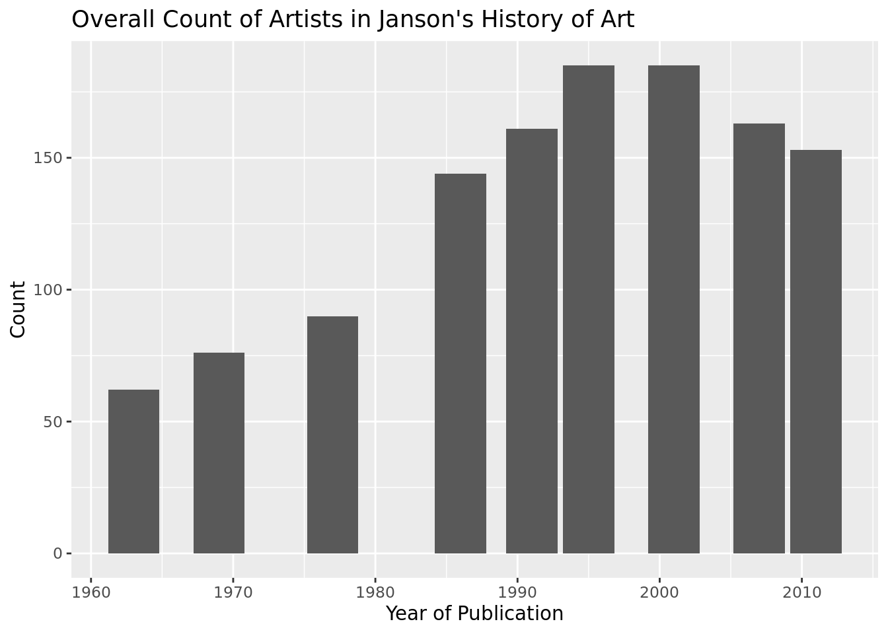
ggplot(gardnerjanson %>% filter(book == "gardner"), aes(x = year))+
geom_bar()+
labs(title = "Overall Count of Artists in Gardner's Art Through the Ages",
x = "Year of Publication",
y = "Count")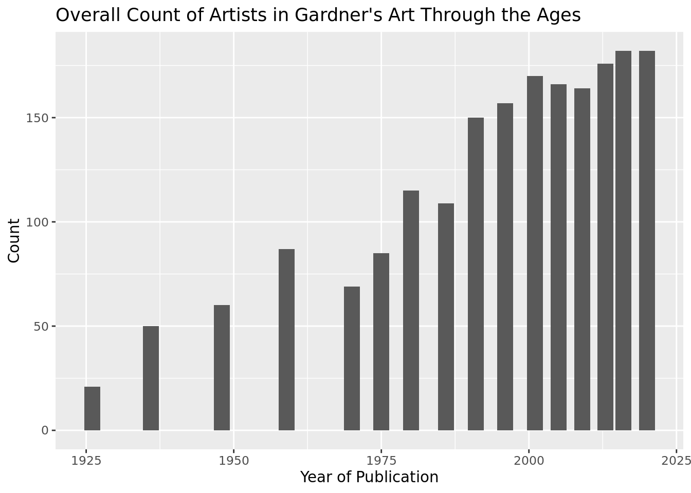
ggplot(gardnerjanson %>% filter(book == "janson"), aes(x = year, fill = artist_gender))+
geom_bar(position = "fill")+
labs(title = "Gender of Artists in Janson's History of Art",
x = "Year of Publication",
y = "Proportion",
fill = "Artist Gender")
ggplot(gardnerjanson %>% filter(book == "gardner", artist_gender != "N/A"), aes(x = year, fill = artist_gender))+
geom_bar(position = "fill")+
labs(title = "Gender of Artists in Gardner's Art Through the Ages",
x = "Year of Publication",
y = "Proportion",
fill = "Artist Gender")
ggplot(gardnerjanson %>% filter(book == "janson"), aes(x = year, fill = artist_race))+
geom_bar(position = "fill")+
labs(title = "Race of Artists in Janson's History of Art",
x = "Year of Publication",
y = "Proportion",
fill = "Artist Race")
ggplot(gardnerjanson %>% filter(book == "gardner", artist_race != "N/A"), aes(x = year, fill = artist_race))+
geom_bar(position = "fill")+
labs(title = "Race of Artists in Gardner's Art Through the Ages",
x = "Year of Publication",
y = "Proportion",
fill = "Artist Race")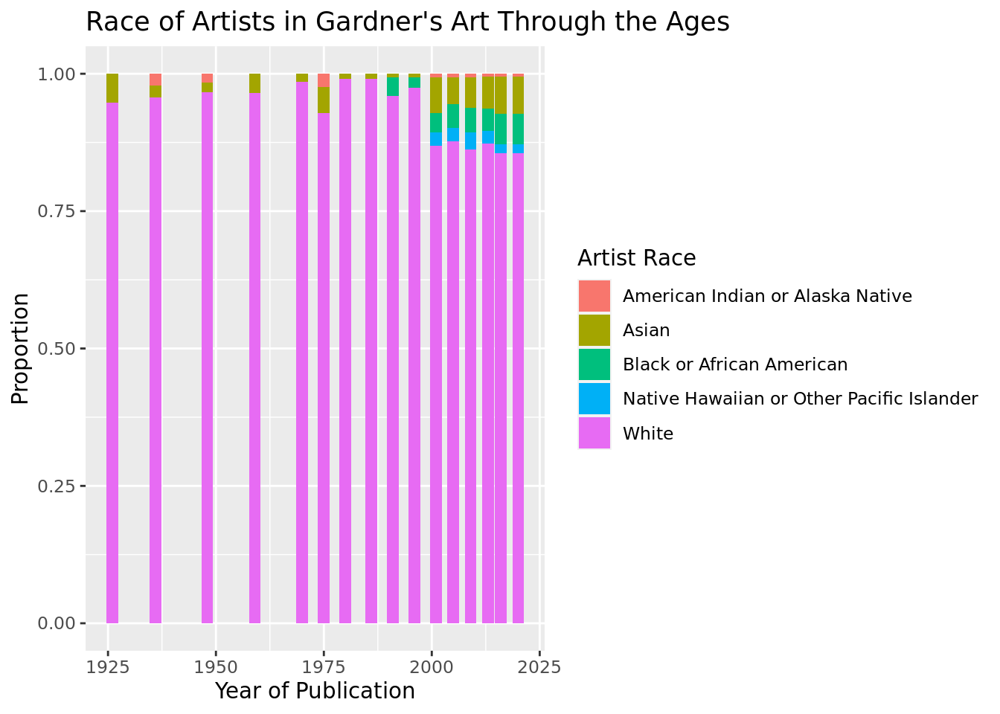
ggplot(gardnerjanson %>% filter(book == "janson"), aes(x = year, fill = artist_ethnicity))+
geom_bar(position = "fill")+
labs(title = "Ethnicity of Artists in Janson's History of Art",
x = "Year of Publication",
y = "Proportion",
fill = "Artist Ethnicity")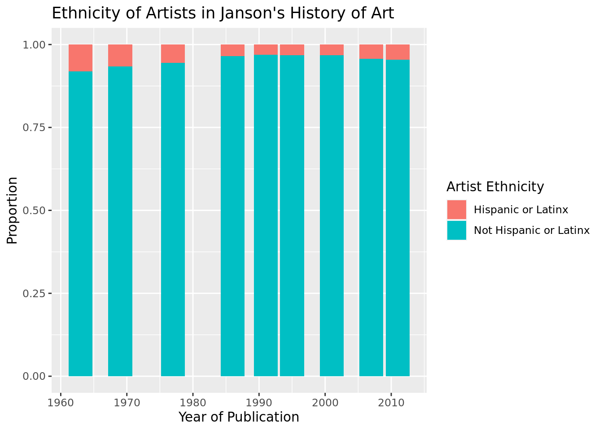
ggplot(gardnerjanson %>% filter(book == "gardner", artist_ethnicity != "N/A"), aes(x = year, fill = artist_ethnicity))+
geom_bar(position = "fill")+
labs(title = "Ethnicity of Artists in Gardner's Art Through the Ages",
x = "Year of Publication",
y = "Proportion",
fill = "Artist Ethnicity")
ggplot(gardnerjanson %>% filter(book == "janson"), aes(x = year, fill = artist_nationality_other))+
geom_bar(position = "fill")+
labs(title = "Nationality of Artists in Janson's History of Art",
x = "Year of Publication",
y = "Proportion",
fill = "Artist Nationality")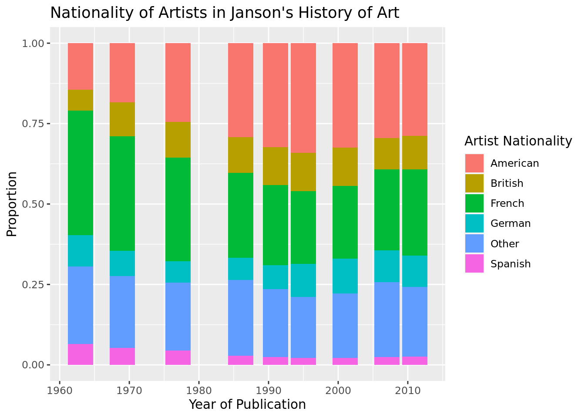
ggplot(gardnerjanson %>% filter(book == "gardner", artist_nationality_other != "N/A"), aes(x = year, fill = artist_nationality_other))+
geom_bar(position = "fill")+
labs(title = "Nationality of Artists in Gardner's Art Through the Ages",
x = "Year of Publication",
y = "Proportion",
fill = "Artist Nationality")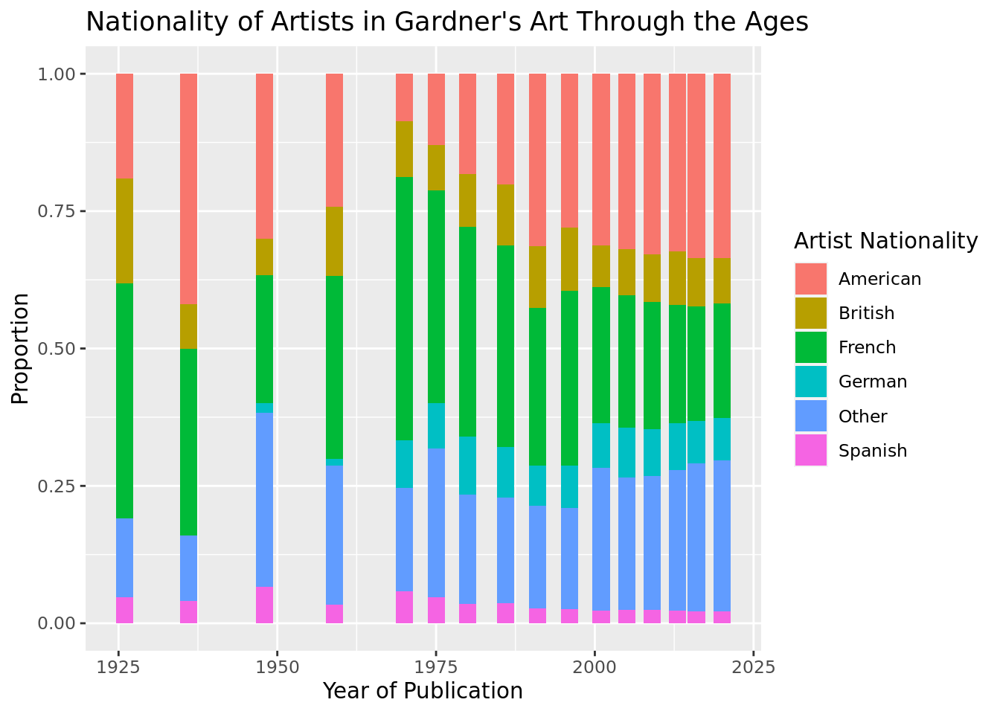
space_ratio_per_page_totalJanson:
ggplot(gardnerjanson_museums %>% filter(book == "janson"),
aes(x = space_ratio_per_page_total, fill = edition_number)) +
geom_histogram() +
labs(
title = "Distribution of Ratio of Space\nper Artist per Edition per Page in Janson",
x = "Ratio of Space per Page",
y = "Count"
)`stat_bin()` using `bins = 30`. Pick better value with `binwidth`.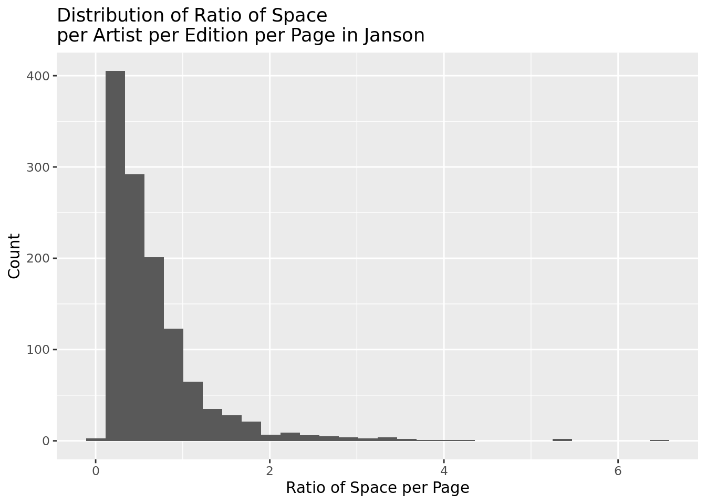
summary(janson$space_ratio_per_page) Min. 1st Qu. Median Mean 3rd Qu. Max.
0.0946 0.2531 0.3387 0.3967 0.4855 1.2785 median <- median(janson$space_ratio_per_page)The visualization above is right skewed, unimodal and assymetrical. Therefore, we would want to look at the median and IQR. The median of space_ratio_per_page_total in Janson is 0.3387305.
space_ratio_per_page with Gender
ggplot(gardnerjanson_museums %>% filter(book == "janson"),
aes(x = artist_gender, y = space_ratio_per_page_total)) +
geom_boxplot() +
labs(
title = "Ratio of Space per Page per Artist per Edition\nin Janson by Gender",
x = "Gender",
y = "Ratio of Space per Page"
)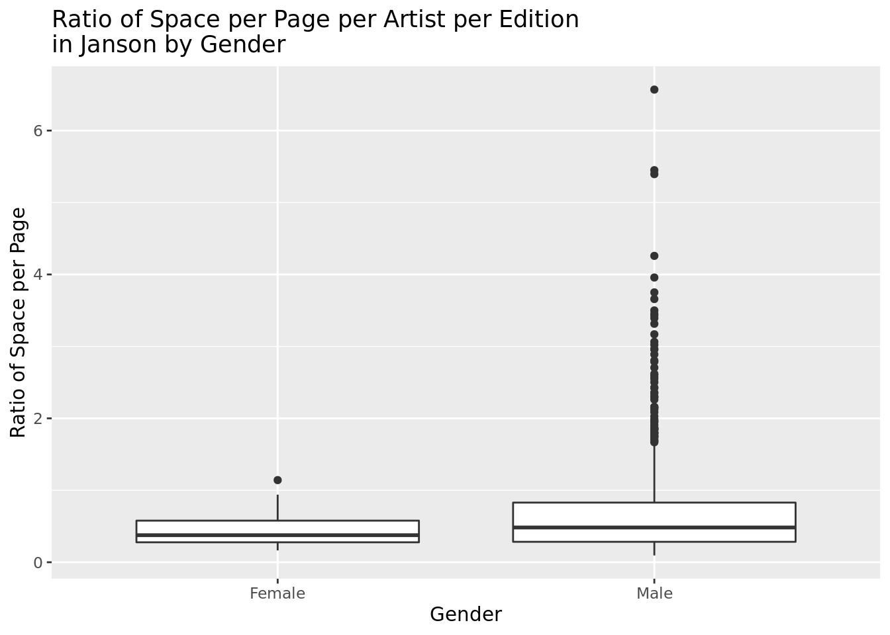
space_ratio_per_page with Race
ggplot(gardnerjanson_museums %>% filter(book == "janson"),
aes(x = artist_race, y = space_ratio_per_page_total)) +
geom_boxplot() +
labs(
title = "Ratio of Space per Page per Artist per Edition\nin Janson by Race",
x = "Race",
y = "Ratio of Space per Page"
)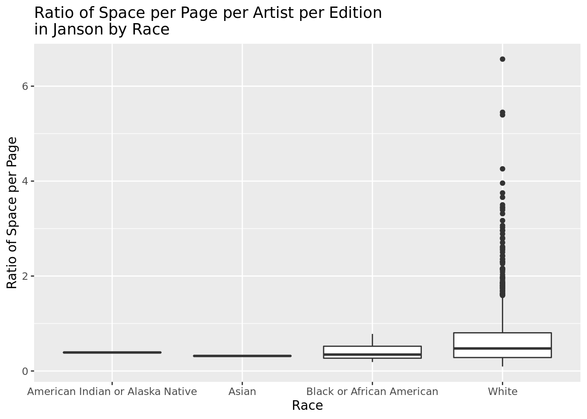
space_ratio_per_page with Ethnicity
ggplot(gardnerjanson_museums %>% filter(book == "janson"),
aes(x = artist_ethnicity, y = space_ratio_per_page_total)) +
geom_boxplot() +
labs(
title = "Ratio of Space per Page per Artist per Edition\nin Janson by Ethnicity",
x = "Ethnicity",
y = "Ratio of Space per Page"
)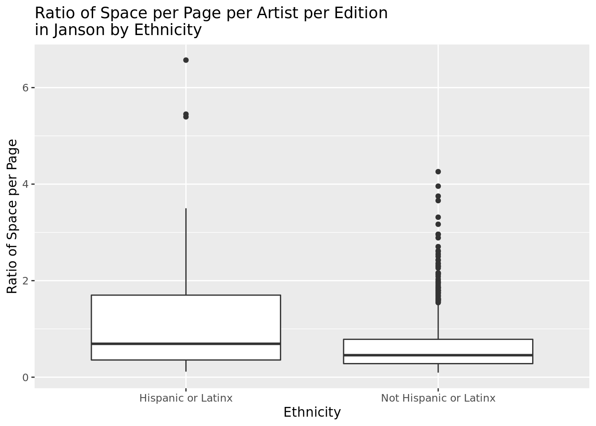
space_ratio_per_page with Nationality
ggplot(gardnerjanson_museums %>% filter(book == "janson"),
aes(x = artist_nationality_other, y = space_ratio_per_page_total)) +
geom_boxplot() +
labs(
title = "Ratio of Space per Page per Artist per Edition\nin Janson by Nationality",
x = "Nationality",
y = "Ratio of Space per Page"
)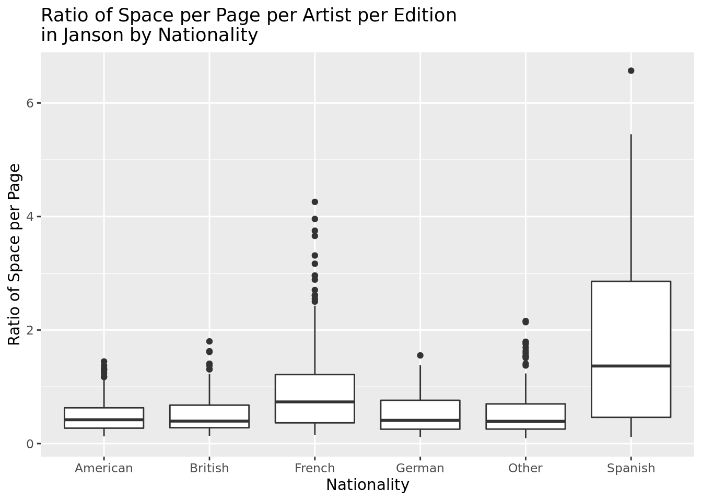
MLR of Janson with Gender +Race + Nationality + Ethnicity ~ space_ratio_per_page
jansonMLR <- lm(space_ratio_per_page_total ~ artist_race +
artist_ethnicity +
artist_gender +
artist_nationality_other +
count_to_year +
whitney_count_to_date,
data = gardnerjanson_museums %>% filter(book == "janson")
)
summary(jansonMLR)
Call:
lm(formula = space_ratio_per_page_total ~ artist_race + artist_ethnicity +
artist_gender + artist_nationality_other + count_to_year +
whitney_count_to_date, data = gardnerjanson_museums %>% filter(book ==
"janson"))
Residuals:
Min 1Q Median 3Q Max
-0.60681 -0.18232 -0.06596 0.16253 0.96781
Coefficients:
Estimate Std. Error t value Pr(>|t|)
(Intercept) 0.413420 0.211508 1.955 0.05158
artist_raceWhite 0.040908 0.086291 0.474 0.63580
artist_ethnicityNot Hispanic or Latinx -0.086579 0.190551 -0.454 0.64990
artist_genderMale 0.085401 0.042256 2.021 0.04418
artist_nationality_otherBritish 0.218994 0.133834 1.636 0.10285
artist_nationality_otherFrench 0.392225 0.091197 4.301 2.32e-05
artist_nationality_otherGerman 0.110778 0.058479 1.894 0.05917
artist_nationality_otherOther 0.011203 0.045129 0.248 0.80412
count_to_year 0.005234 0.001999 2.619 0.00928
whitney_count_to_date 0.002039 0.002229 0.915 0.36117
(Intercept) .
artist_raceWhite
artist_ethnicityNot Hispanic or Latinx
artist_genderMale *
artist_nationality_otherBritish
artist_nationality_otherFrench ***
artist_nationality_otherGerman .
artist_nationality_otherOther
count_to_year **
whitney_count_to_date
---
Signif. codes: 0 '***' 0.001 '**' 0.01 '*' 0.05 '.' 0.1 ' ' 1
Residual standard error: 0.2625 on 293 degrees of freedom
(916 observations deleted due to missingness)
Multiple R-squared: 0.139, Adjusted R-squared: 0.1126
F-statistic: 5.256 on 9 and 293 DF, p-value: 1.207e-06glance(jansonMLR)$r.squared[1] 0.1390091glance(jansonMLR)$adj.r.squared[1] 0.1125623Gardner:
ggplot(
gardnerjanson_museums %>% filter(book == "gardner"),
aes(x = space_ratio_per_page_total)
) +
geom_histogram() +
labs(
title = "Distribution of Ratio of Space\nper Artist per Edition per Page in Gardner",
x = "Ratio of Space per Page",
y = "Count"
)`stat_bin()` using `bins = 30`. Pick better value with `binwidth`.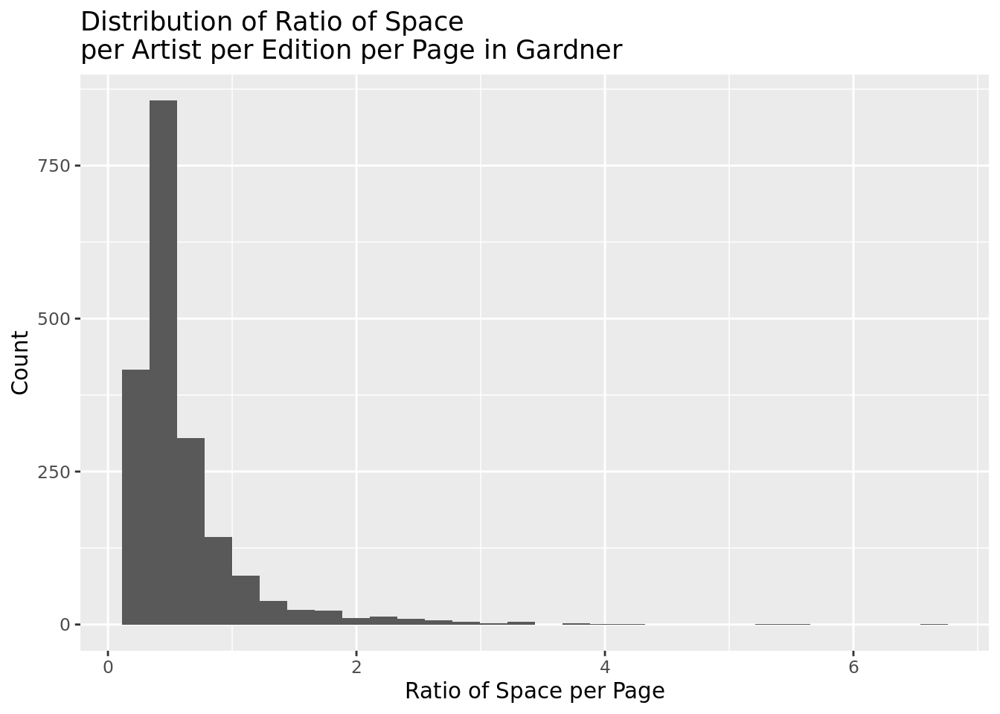
gardnerjanson_museums %>%
filter(book == "gardner") %>%
summarize(
min = min(space_ratio_per_page_total),
q1 = quantile(space_ratio_per_page_total, 0.25),
median = median(space_ratio_per_page_total),
mean = mean(space_ratio_per_page_total),
q3 = quantile(space_ratio_per_page_total, 0.75),
max = max(space_ratio_per_page_total)
)# A tibble: 334 × 7
artist_name min q1 median mean q3 max
<chr> <dbl> <dbl> <dbl> <dbl> <dbl> <dbl>
1 Aaron Douglas 0.303 0.369 0.388 0.411 0.460 0.544
2 Adélaïde Labille-Guiard 0.409 0.411 0.413 0.452 0.474 0.534
3 Adolphe William Bouguereau 0.218 0.294 0.298 0.339 0.390 0.532
4 Albert Bierstadt 0.368 0.382 0.431 0.428 0.457 0.506
5 Albert Pinkham Ryder 0.315 0.361 0.461 0.415 0.467 0.476
6 Albert Sands Southworth 0.222 0.287 0.294 0.305 0.348 0.356
7 Alexander Gardner 0.348 0.348 0.348 0.348 0.348 0.348
8 Alexandre Cabanel 0.502 0.502 0.502 0.502 0.502 0.502
9 Alfred Stieglitz 0.415 0.490 0.502 0.659 0.551 1.30
10 Alfredo Guido 0.306 0.306 0.306 0.306 0.306 0.306
# … with 324 more rowsspace_ratio_per_page vs Gender
ggplot(gardnerjanson_museums %>% filter(book == "gardner"),
aes(x = artist_gender, y = space_ratio_per_page_total)
) +
geom_boxplot() +
labs(
title = "Ratio of Space per Page per Artist per Edition\nin Gardner by Gender",
x = "Gender",
y = "Ratio of Space per Page"
)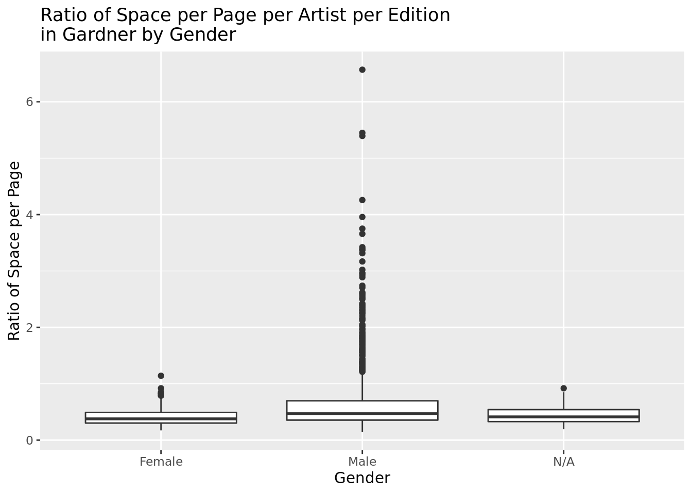
space_ratio_per_page vs Race
ggplot(
gardnerjanson_museums %>% filter(book == "gardner"),
aes(x = artist_race, y = space_ratio_per_page_total)
) +
geom_boxplot() +
labs(
title = "Ratio of Space per Page per Artist per Edition\nin Gardner by Race",
x = "Race",
y = "Ratio of Space per Page"
) +
theme(axis.text.x = element_text(angle = 45, size = 5)) +
ylim(0, 2.0)Warning: Removed 51 rows containing non-finite values (stat_boxplot).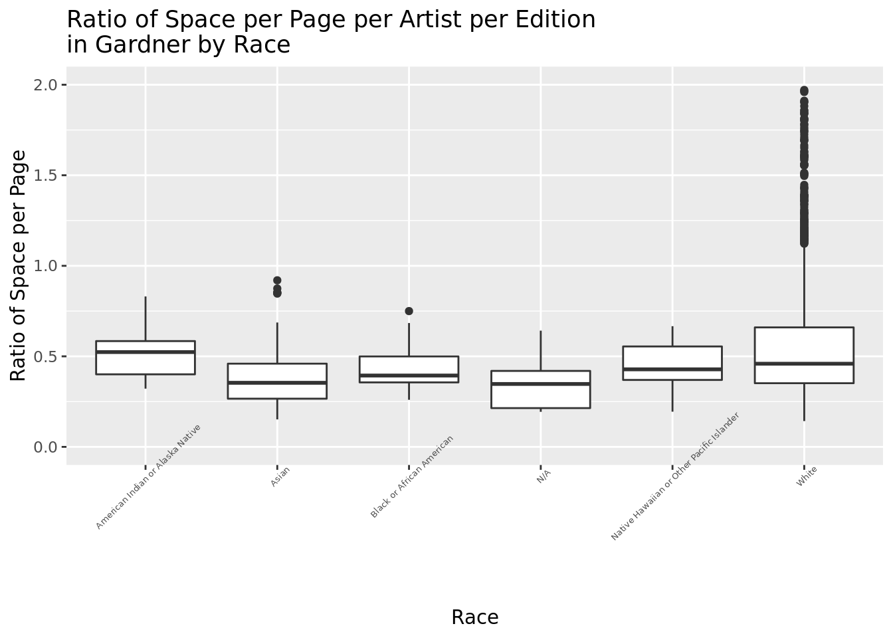
space_ratio_per_page vs Ethnicity
ggplot(
gardnerjanson_museums %>% filter(book == "gardner"),
aes(x = artist_ethnicity, y = space_ratio_per_page_total)
) +
geom_boxplot() +
labs(
title = "Ratio of Space per Page per Artist per Edition\nin Gardner by Ethnicity",
x = "Ethnicity",
y = "Ratio of Space per Page"
)
space_ratio_per_page vs Nationality
ggplot(
gardnerjanson_museums %>% filter(book == "gardner"),
aes(x = artist_nationality_other, y = space_ratio_per_page_total)
) +
geom_boxplot() +
labs(
title = "Ratio of Space per Page per Artist per Edition\nin Gardner by Nationality",
x = "Nationality",
y = "Ratio of Space per Page"
)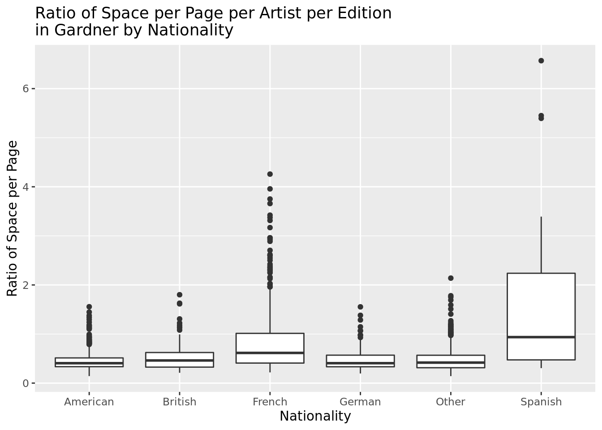
GardnerMLR Demographic
gardnerMLR <- lm(space_ratio_per_page_total ~ artist_race +
artist_ethnicity +
artist_gender +
artist_nationality_other +
count_to_year +
whitney_count_to_date,
data = gardnerjanson_museums %>% filter(book == "gardner")
)
summary(gardnerMLR)
Call:
lm(formula = space_ratio_per_page_total ~ artist_race + artist_ethnicity +
artist_gender + artist_nationality_other + count_to_year +
whitney_count_to_date, data = gardnerjanson_museums %>% filter(book ==
"gardner"))
Residuals:
Min 1Q Median 3Q Max
-0.47765 -0.13541 -0.04622 0.06820 0.97712
Coefficients:
Estimate Std. Error t value Pr(>|t|)
(Intercept) 2.593e-01 1.817e-01 1.427 0.1544
artist_raceBlack or African American 1.746e-01 1.746e-01 1.000 0.3179
artist_raceN/A 4.498e-05 2.069e-01 0.000 0.9998
artist_raceWhite 1.246e-01 1.632e-01 0.763 0.4459
artist_ethnicityNot Hispanic or Latinx 2.218e-02 6.492e-02 0.342 0.7329
artist_genderMale 5.934e-02 3.016e-02 1.968 0.0499
artist_nationality_otherBritish 2.841e-01 1.588e-01 1.788 0.0745
artist_nationality_otherFrench 3.371e-01 6.798e-02 4.958 1.08e-06
artist_nationality_otherGerman 5.346e-02 4.806e-02 1.112 0.2667
artist_nationality_otherOther 2.571e-02 3.957e-02 0.650 0.5162
count_to_year 3.757e-03 1.784e-03 2.105 0.0359
whitney_count_to_date -1.372e-03 1.436e-03 -0.955 0.3402
(Intercept)
artist_raceBlack or African American
artist_raceN/A
artist_raceWhite
artist_ethnicityNot Hispanic or Latinx
artist_genderMale *
artist_nationality_otherBritish .
artist_nationality_otherFrench ***
artist_nationality_otherGerman
artist_nationality_otherOther
count_to_year *
whitney_count_to_date
---
Signif. codes: 0 '***' 0.001 '**' 0.01 '*' 0.05 '.' 0.1 ' ' 1
Residual standard error: 0.2224 on 371 degrees of freedom
(1560 observations deleted due to missingness)
Multiple R-squared: 0.1375, Adjusted R-squared: 0.112
F-statistic: 5.378 on 11 and 371 DF, p-value: 6.16e-08glance(gardnerMLR)$r.squared[1] 0.1375243glance(gardnerMLR)$adj.r.squared[1] 0.1119522MLR demograpic with jansongardner
gardnerjansonMLR <- lm(space_ratio_per_page_total ~ artist_race +
artist_ethnicity +
artist_gender +
artist_nationality_other +
count_to_year +
whitney_count_to_date,
data = gardnerjanson_museums
)
summary(gardnerjansonMLR)
Call:
lm(formula = space_ratio_per_page_total ~ artist_race + artist_ethnicity +
artist_gender + artist_nationality_other + count_to_year +
whitney_count_to_date, data = gardnerjanson_museums)
Residuals:
Min 1Q Median 3Q Max
-0.58107 -0.16183 -0.05043 0.11317 0.97467
Coefficients:
Estimate Std. Error t value Pr(>|t|)
(Intercept) 0.2724911 0.1862158 1.463 0.14385
artist_raceBlack or African American 0.1299298 0.1811683 0.717 0.47351
artist_raceN/A 0.0020164 0.2213637 0.009 0.99274
artist_raceWhite 0.1143954 0.1735044 0.659 0.50991
artist_ethnicityNot Hispanic or Latinx 0.0065002 0.0600658 0.108 0.91385
artist_genderMale 0.0678691 0.0246132 2.757 0.00598
artist_nationality_otherBritish 0.2398944 0.0995366 2.410 0.01621
artist_nationality_otherFrench 0.3603953 0.0550059 6.552 1.13e-10
artist_nationality_otherGerman 0.0846152 0.0367719 2.301 0.02169
artist_nationality_otherOther 0.0228913 0.0293261 0.781 0.43532
count_to_year 0.0042287 0.0013163 3.213 0.00138
whitney_count_to_date -0.0003505 0.0012029 -0.291 0.77085
(Intercept)
artist_raceBlack or African American
artist_raceN/A
artist_raceWhite
artist_ethnicityNot Hispanic or Latinx
artist_genderMale **
artist_nationality_otherBritish *
artist_nationality_otherFrench ***
artist_nationality_otherGerman *
artist_nationality_otherOther
count_to_year **
whitney_count_to_date
---
Signif. codes: 0 '***' 0.001 '**' 0.01 '*' 0.05 '.' 0.1 ' ' 1
Residual standard error: 0.2403 on 674 degrees of freedom
(2476 observations deleted due to missingness)
Multiple R-squared: 0.133, Adjusted R-squared: 0.1189
F-statistic: 9.402 on 11 and 674 DF, p-value: 7.494e-16glance(gardnerjansonMLR)$r.squared[1] 0.1330322NOTE: I think something is wrong with the museum join, take a look to see if you can debug, or we can look together. Very few records are being matched, which seems odd.
whitney eda
ggplot(gardnerjanson_museums, aes(x = whitney_count_to_date)) +
geom_histogram(binwidth = 1) +
labs(
title = "Distribution of Whitney Exhibitions per Artist per Edition",
x = "Count to Date",
y = "Count"
)Warning: Removed 2346 rows containing non-finite values (stat_bin).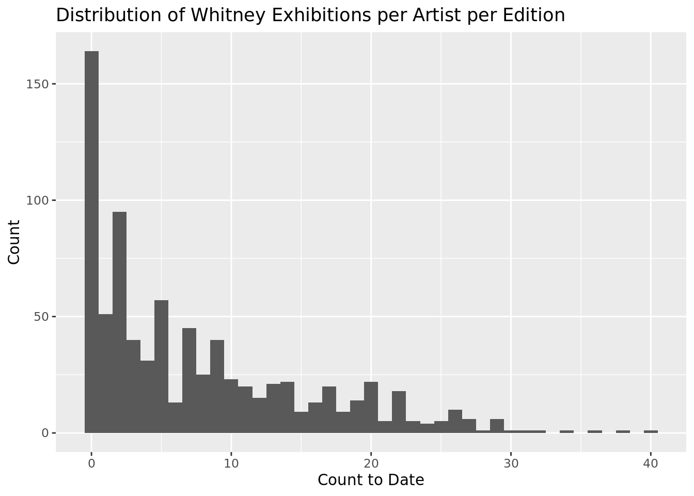
ggplot(gardnerjanson_museums, aes(x = whitney_count_to_date, y = space_ratio_per_page_total)) +
geom_point(position=position_jitter(h=0.1, w=0.1), alpha = 0.5, size = 1) +
geom_smooth(method = "lm", se = FALSE)+
labs(
title = "Ratio of Space Per Artist Per Edition by\nNumber of Exhibitions per Artist per Editions in the Whitney",
x = "Count to Date",
y = "Ratio of Space Per Artist Per Edition"
)`geom_smooth()` using formula 'y ~ x'Warning: Removed 2346 rows containing non-finite values (stat_smooth).Warning: Removed 2346 rows containing missing values (geom_point).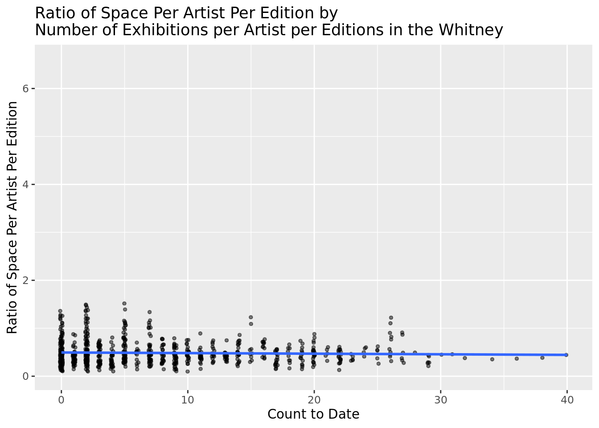
#corr_coef
corr_coef_whitney <- cor(gardnerjanson_museums$whitney_count_to_date,
gardnerjanson_museums$space_ratio_per_page_total,
use = "complete.obs")ggplot(gardnerjanson_museums %>% filter(book == "gardner"), aes(x = whitney_count_to_date, y = space_ratio_per_page_total)) +
geom_point(position=position_jitter(h=0.1, w=0.1), alpha = 0.5, size = 1) +
geom_smooth(method = "lm", se = FALSE)+
labs(
title = "Ratio of Space Per Artist Per Edition in Gardner by\nNumber of Exhibitions per Artist per Editions in the Whitney",
x = "Count to Date",
y = "Ratio of Space Per Artist Per Edition"
)`geom_smooth()` using formula 'y ~ x'Warning: Removed 1463 rows containing non-finite values (stat_smooth).Warning: Removed 1463 rows containing missing values (geom_point).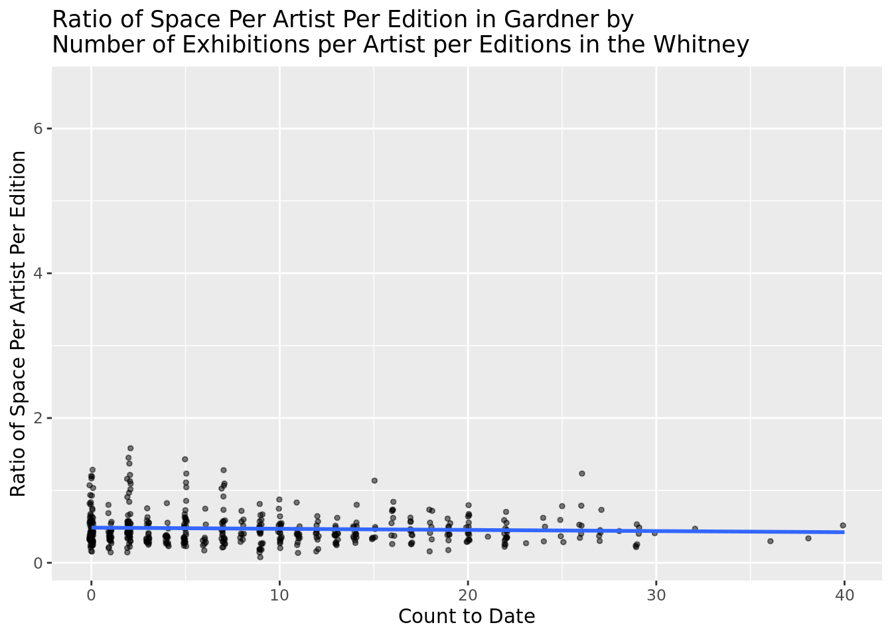
#corr_coefggplot(gardnerjanson_museums %>% filter(book == "janson"), aes(x = whitney_count_to_date, y = space_ratio_per_page_total)) +
geom_point(position=position_jitter(h=0.1, w=0.1), alpha = 0.5, size = 1) +
geom_smooth(method = "lm", se = FALSE)+
labs(
title = "Ratio of Space Per Artist Per Edition in Janson by\nNumber of Exhibitions per Artist per Editions in the Whitney",
x = "Count to Date",
y = "Ratio of Space Per Artist Per Edition"
)`geom_smooth()` using formula 'y ~ x'Warning: Removed 883 rows containing non-finite values (stat_smooth).Warning: Removed 883 rows containing missing values (geom_point).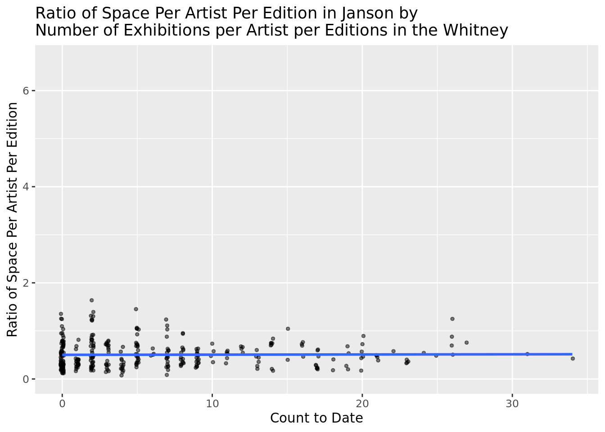
p <- ggplot(gardnerjanson_museums, aes(space_ratio_per_page_total,year)) +
geom_tile(aes(fill = whitney_count_to_date), colour = "steelblue") +
scale_fill_gradient(low = "steelblue",high = "red")
p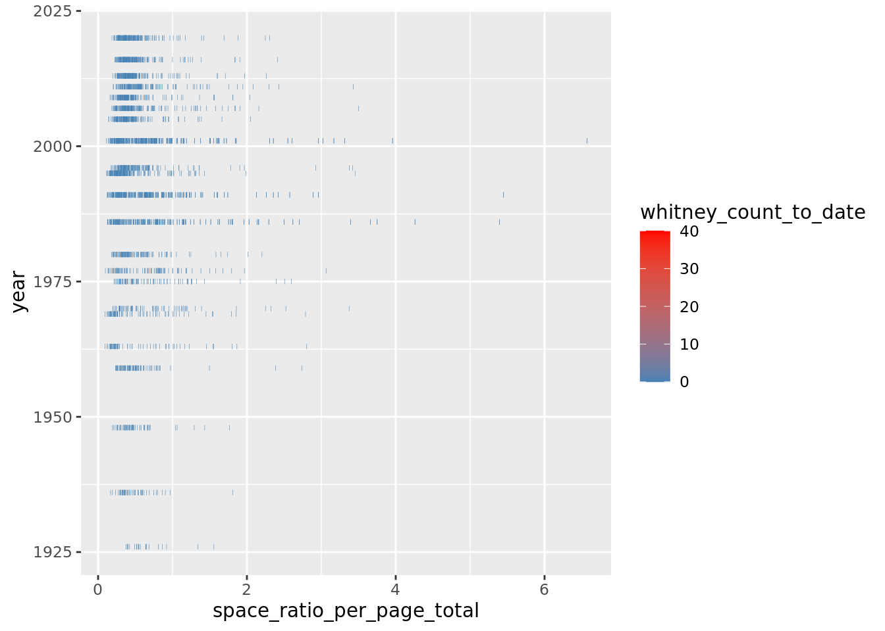
g <- ggplot(gardnerjanson_museums, aes(space_ratio_per_page_total,year)) +
geom_tile(aes(fill = count_to_year), colour = "steelblue") +
scale_fill_gradient(low = "steelblue",high = "red")
g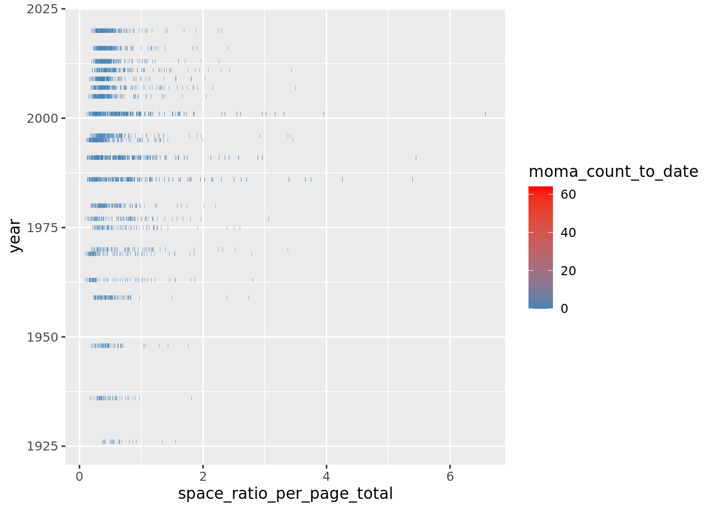
moma eda
ggplot(gardnerjanson_museums, aes(x = count_to_year)) +
geom_histogram(binwidth = 1) +
labs(
title = "Distribution of MoMA Exhibitions per Artist per Edition",
x = "Count to Date",
y = "Count"
)Warning: Removed 1160 rows containing non-finite values (stat_bin).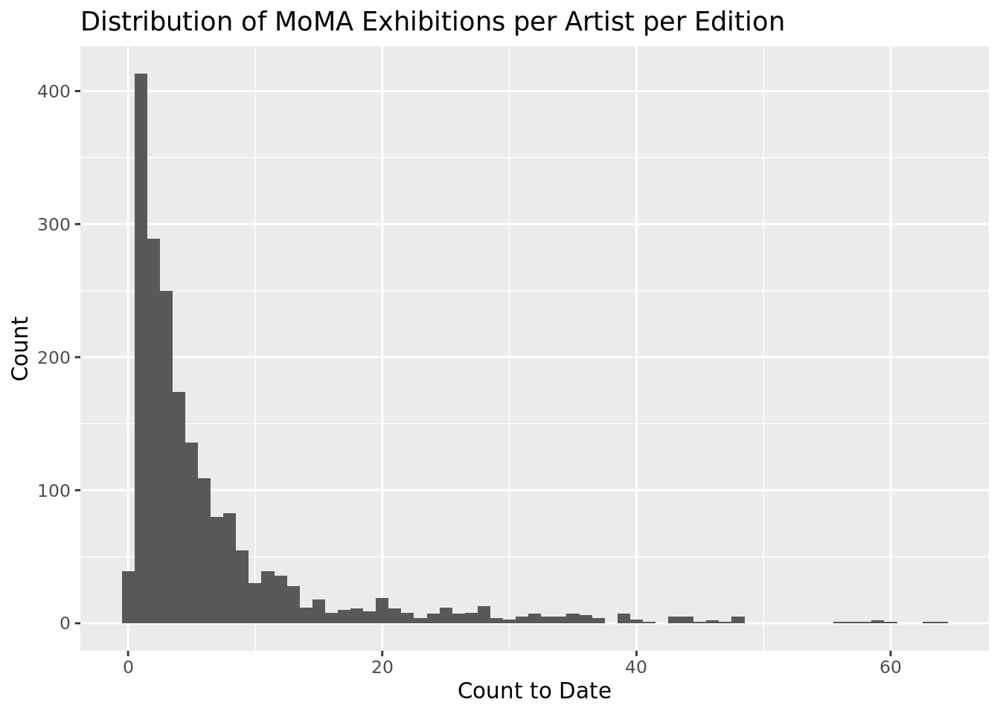
ggplot(gardnerjanson_museums, aes(x = count_to_year, y = space_ratio_per_page_total)) +
geom_point(position=position_jitter(h=0.1, w=0.1), alpha = 0.5, size = 1) +
geom_smooth(method = "lm", se = FALSE)+
labs(
title = "Ratio of Space Per Artist Per Edition by\nNumber of Exhibitions per Artist per Editions in the MoMA",
x = "Count to Date",
y = "Ratio of Space Per Artist Per Edition"
)`geom_smooth()` using formula 'y ~ x'Warning: Removed 1160 rows containing non-finite values (stat_smooth).Warning: Removed 1160 rows containing missing values (geom_point).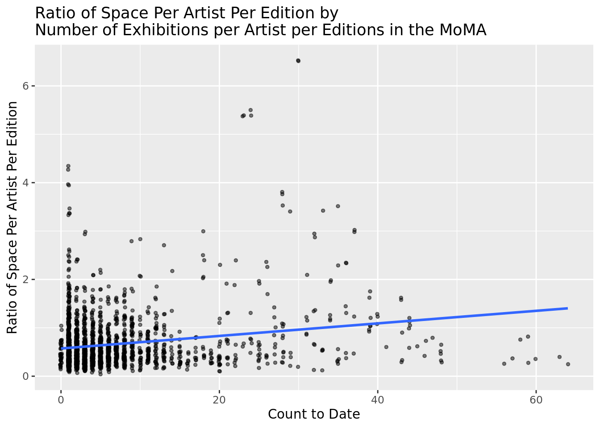
corr_coef_moma <- cor(gardnerjanson_museums$count_to_year,
gardnerjanson_museums$space_ratio_per_page_total,
use = "complete.obs")ggplot(gardnerjanson_museums %>% filter(book == "gardner"), aes(x = count_to_year, y = space_ratio_per_page_total)) +
geom_point(position=position_jitter(h=0.1, w=0.1), alpha = 0.5, size = 1) +
geom_smooth(method = "lm", se = FALSE)+
labs(
title = "Ratio of Space Per Artist Per Edition in Gardner by\nNumber of Exhibitions per Artist per Editions in the MoMA",
x = "Count to Date",
y = "Ratio of Space Per Artist Per Edition"
)`geom_smooth()` using formula 'y ~ x'Warning: Removed 789 rows containing non-finite values (stat_smooth).Warning: Removed 789 rows containing missing values (geom_point).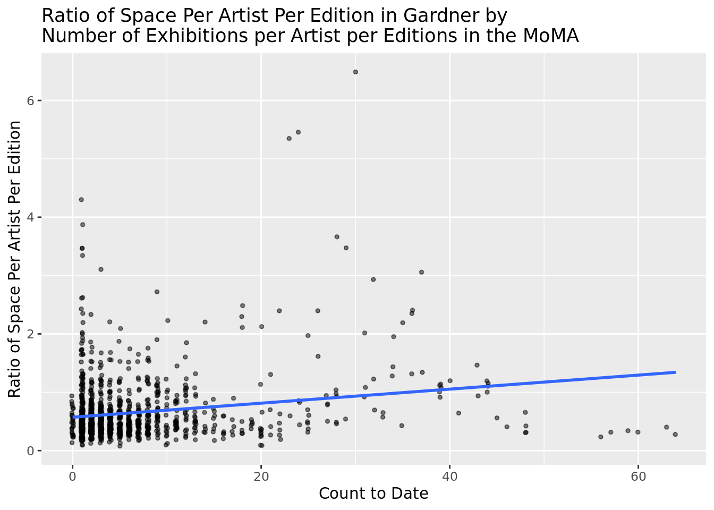
ggplot(gardnerjanson_museums %>% filter(book == "janson"), aes(x = count_to_year, y = space_ratio_per_page_total)) +
geom_point(position=position_jitter(h=0.1, w=0.1), alpha = 0.5, size = 1) +
geom_smooth(method = "lm", se = FALSE)+
labs(
title = "Ratio of Space Per Artist Per Edition in Janson by\nNumber of Exhibitions per Artist per Editions in the MoMA",
x = "Count to Date",
y = "Ratio of Space Per Artist Per Edition"
)`geom_smooth()` using formula 'y ~ x'Warning: Removed 371 rows containing non-finite values (stat_smooth).Warning: Removed 371 rows containing missing values (geom_point).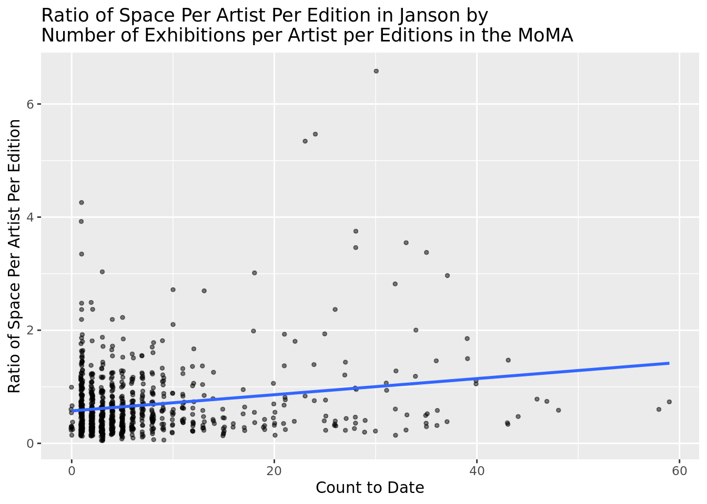